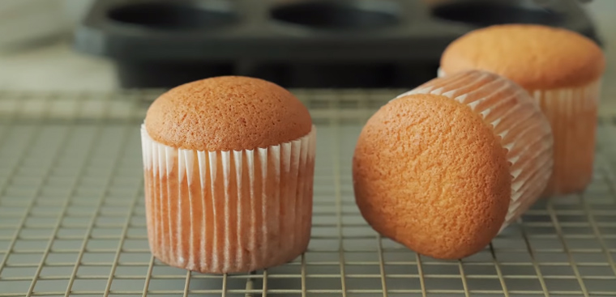
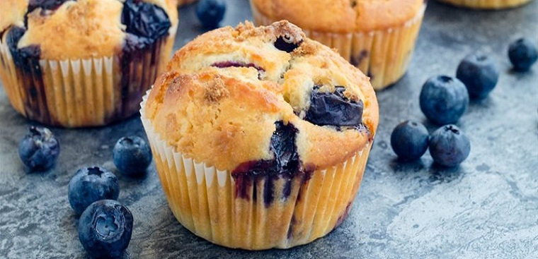
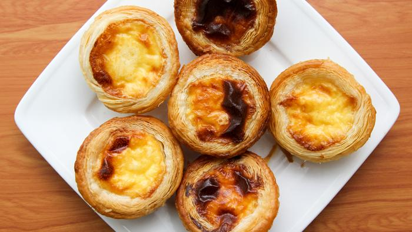

07/Jul
How to make Taiwanese cupcake
Taiwanese cupcake is famous for its fluffy softness, eating a piece of cake like it melts in your mouth. Today, i will teach you how to make delicious and soft cupcakes with Taiwanese flavors. Let's get started in the kitchen now!
Read more07/Jul
How to make blueberry yogurt muffin
Blueberry muffin with sweet and sour taste is not boring, how to make the cake is not difficult. What are you waiting for, foodies, let's go to the kitchen to make a beautiful little cake to treat the whole family!
Read more07/Jul
How to make KFC egg tart
Egg tart with crispy crust and greasy inside is a favorite of many people. This egg tart requires no expensive ingredients, just a little patience. Let's go to the kitchen to make delicious egg tarts that are not inferior to KFC right here!
Read more